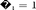
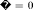
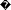
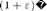
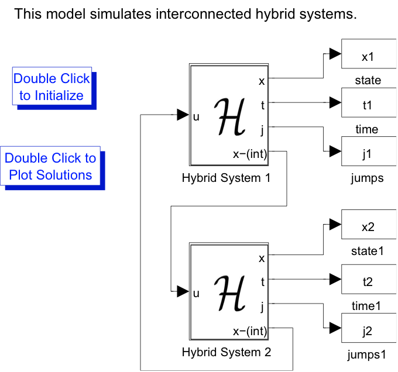
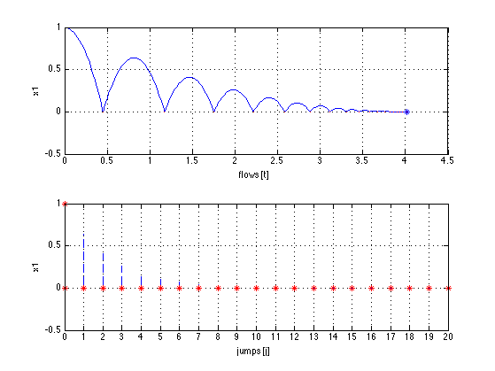
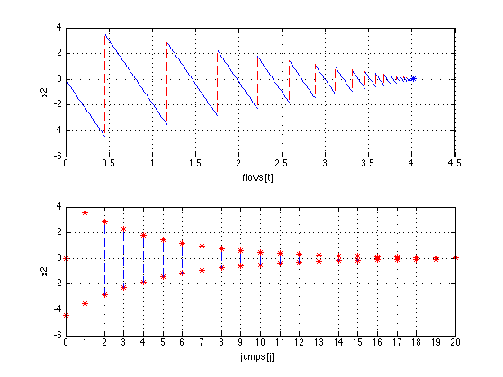
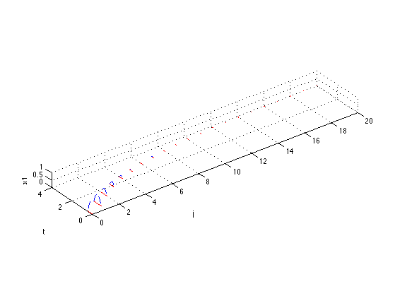

Example Template V001: [TITLE]
This template would help you to create html script to share your examples.
Contents
Biological example: synchronization of two fireflies [DESCRIPTION]
Consider a biological example of the synchronization of two fireflies flashing. The fireflies can be modeled mathematically as periodic oscillators which tend to synchronize their flashing until they are flashing in phase with each other. A state value of  corresponds to a flash, and after each flash, the firefly automatically resets its internal timer (periodic cycle) to . The synchronization of the fireflies can be modeled as an interconnection of two hybrid systems because every time one firefly flashes, the other firefly notices and jumps ahead in its internal timer  by , where is a biologically determined coefficient. This happens until eventually both fireflies synchronize their internal timers and are flashing simultaneously.
[EXTERNAL FIGURES]

The only event that affects the flashing of a firefly is the flashing of the other firefly. The interconnection diagram can be seen in the previous figure
Define initial conditions
initialization_ex1_7 sim('Example1_7') open_system('Example1_7/Firefly 1/flow map f','OpenFcn') x1_0 = 1; x2_0 = 0; x0 = [x1_0; x2_0];
Set simulation horizon
TSPAN = [0 10]; JSPAN = [0 20];
Set rule for jumps and ODE solver options
rule = 1 -> priority for jumps
rule = 2 -> priority for flows
set the maximum step length. At each run of the integrator the option 'MaxStep' is set to (time length of last integration)*maxStepCoefficient. Default value = 0.1
rule = 1; options = odeset('RelTol',1e-6,'MaxStep',.1); maxStepCoefficient = 0.1;
Simulate using the HyEQSolver script
Given the matlab functions that models the flow map, jump map, flow set and jump set (f_ex1_2, g_ex1_2, C_ex1_2, and D_ex1_2 respectively)
[t j x] = HyEQsolver( @f_ex1_2,@g_ex1_2,@C_ex1_2,@D_ex1_2,...
x0,TSPAN,JSPAN,rule,options);
Completed: 100% Done
plot solution
figure(1) % position clf subplot(2,1,1),plotflows(t,j,x(:,1)) grid on ylabel('x1') subplot(2,1,2),plotjumps(t,j,x(:,1)) grid on ylabel('x1') figure(2) % velocity clf subplot(2,1,1),plotflows(t,j,x(:,2)) grid on ylabel('x2') subplot(2,1,2),plotjumps(t,j,x(:,2)) grid on ylabel('x2') % plot hybrid arc plotHybridArc(t,j,x) xlabel('j') ylabel('t') zlabel('x1')  